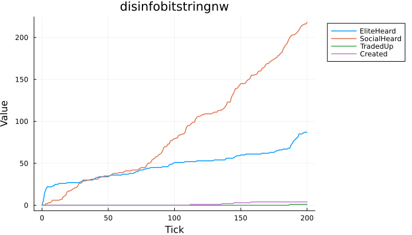
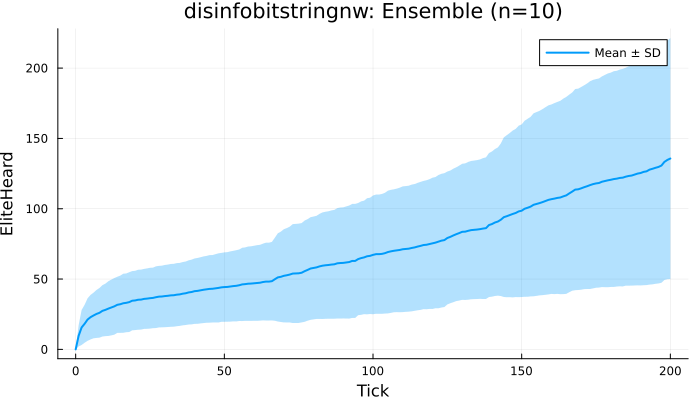
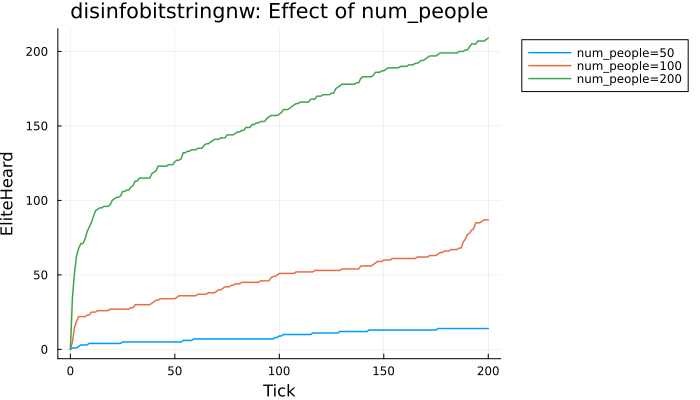

Disinfobitstringnw
Overview
This vignette demonstrates the Disinfobitstringnw model implemented in ArkModelZoo.jl using the Ark.jl ECS framework.
Parameters
| Parameter | Type | Default | Description |
|---|---|---|---|
num_people | Int | 100 | num people |
frac_influencers | Float64 | 0.1 | frac influencers |
network_type | String | "preferential" | network type |
network_density | Float64 | 0.1 | network density |
min_size | Int | 1 | min size |
neighborhood_size | Int | 4 | neighborhood size |
max_rumors | Int | 10 | max rumors |
elite_influence | Float64 | 0.6 | elite influence |
social_influence | Float64 | 0.1 | social influence |
trade_up_influence | Float64 | 0.1 | trade up influence |
rumor_generation | Float64 | 0.05 | rumor generation |
initial_green_pct | Int | 50 | initial green pct |
variant | String | "irregular" | variant |
Source Code
The Julia code to run this model:
using ArkModelZoo
_, trajectory = run_disinfobitstringnw()Time Series

Ensemble Runs
Ten replicates with different random seeds, showing mean ± standard deviation.

Parameter Sensitivity
Varying num_people.

Appendix: Source Code
This model is implemented in the Ark.jl Entity-Component-System (ECS) framework. The code is split into five files, each with a distinct role:
- Parameters: a mutable struct holding all configurable values.
- Components: lightweight data types attached to individual entities (agents).
- Resources: world-level shared state accessible to all systems.
- Systems: functions that operate on entities each tick, defining model behavior.
- Model: wiring that assembles the world, registers resources and systems, and provides the run entry point.
Parameters (parameters.jl)
The parameter struct uses @kwdef so that every field has a default value and can be overridden by keyword. These defaults match the original NetLogo model’s slider settings.
Base.@kwdef mutable struct DisBitParams
num_people::Int = 100
frac_influencers::Float64 = 0.1
network_type::String = "preferential"
network_density::Float64 = 0.1
min_size::Int = 1
neighborhood_size::Int = 4
max_rumors::Int = 10
elite_influence::Float64 = 0.6
social_influence::Float64 = 0.1
trade_up_influence::Float64 = 0.1
rumor_generation::Float64 = 0.05
initial_green_pct::Int = 50
variant::String = "irregular"
ticks_to_end::Int = 3000
model_rate_1_nth::Int = 1
heard_rumors_to_generate::Bool = true
influencers_generate_rumors::Bool = false
only_one_generates::Bool = true
only_one_forgets::Bool = false
dissipation_rate::Float64 = 0.1
max_ticks::Int = 200
seed::Int = 42
endComponents (components.jl)
Components are lightweight data types attached to individual entities (agents). Mutable structs hold per-entity state, while empty tag structs act as markers for the ECS query system to efficiently filter entities.
struct DisBitDummy endResources (resources.jl)
Resources are world-level singletons shared across all systems, used for global state and aggregate statistics.
mutable struct DisBitNetwork
n_total::Int # num_people + 1 (elite)
adj::Vector{Set{Int}}
agent_type::Vector{Int} # 0=regular, 1=influencer, 2=elite
rumors::Vector{BitVector} # BitVector of length max_rumors per agent
patch_vote::Matrix{Int} # patch voting grid for irregular/block variant
end
function DisBitNetwork()
DisBitNetwork(0, Set{Int}[], Int[], BitVector[], zeros(Int, 0, 0))
end
function _disbit_add_agent!(net::DisBitNetwork, max_rumors::Int)
push!(net.adj, Set{Int}())
push!(net.agent_type, 0)
push!(net.rumors, falses(max_rumors))
net.n_total += 1
return net.n_total
end
function _disbit_add_edge!(net::DisBitNetwork, i::Int, j::Int)
if j ∉ net.adj[i]
push!(net.adj[i], j)
push!(net.adj[j], i)
end
end
mutable struct DisBitStats
times_heard_from_elites::Int
times_heard_from_social::Int
times_traded_up::Int
times_created_rumor::Int
end
DisBitStats() = DisBitStats(0, 0, 0, 0)Systems (systems.jl)
Systems contain the model logic and execute in a defined order each tick. Each system struct implements either initialize! (run once at setup) or update! (run every tick).
# Participatory Disinformation NW+Bitstring — full variant with 3 network types and 3 elite variants
struct InitDisBitSystem <: System end
function _disbit_setup_irregular!(patch_vote::Matrix{Int}, rng, initial_green_pct::Int)
w, h = size(patch_vote)
for x in 1:w, y in 1:h
patch_vote[x, y] = rand(rng, 0:99) < initial_green_pct ? 0 : 1
end
# Cellular automaton smoothing
stop_count = 100
for iter in 1:stop_count
totals = zeros(Int, w, h)
for x in 1:w, y in 1:h
s = 0
for dx in -1:1, dy in -1:1
(dx == 0 && dy == 0) && continue
nx, ny = x + dx, y + dy
if 1 <= nx <= w && 1 <= ny <= h
s += patch_vote[nx, ny]
end
end
totals[x, y] = s
end
any_changed = false
for x in 1:w, y in 1:h
prev = patch_vote[x, y]
t = totals[x, y]
if t < 3
patch_vote[x, y] = 0
elseif t == 3
patch_vote[x, y] = 0
elseif t == 4
patch_vote[x, y] = 1 - patch_vote[x, y]
elseif t == 5
patch_vote[x, y] = 1
else
patch_vote[x, y] = 1
end
if patch_vote[x, y] != prev
any_changed = true
end
end
!any_changed && break
end
end
function initialize!(::InitDisBitSystem, world::World)
params = get_resource(world, DisBitParams)
rng = get_resource(world, RNGResource).rng
net = get_resource(world, DisBitNetwork)
stats = get_resource(world, DisBitStats)
# Build network
if params.network_type == "preferential"
g = nw_generate_preferential_attachment(rng, params.num_people, params.min_size)
for i in 1:g.n; _disbit_add_agent!(net, params.max_rumors); end
net.adj[1:g.n] = g.adj
elseif params.network_type == "random"
g = nw_generate_random(rng, params.num_people, params.network_density)
for i in 1:g.n; _disbit_add_agent!(net, params.max_rumors); end
net.adj[1:g.n] = g.adj
elseif params.network_type == "small-world"
g = nw_generate_watts_strogatz(rng, params.num_people, params.neighborhood_size, 0.1)
for i in 1:g.n; _disbit_add_agent!(net, params.max_rumors); end
net.adj[1:g.n] = g.adj
end
# Assign influencers
n_inf = max(1, round(Int, params.frac_influencers * params.num_people))
indices = shuffle!(rng, collect(1:params.num_people))
for k in 1:n_inf
net.agent_type[indices[k]] = 1
end
# Create elite (last agent)
elite_id = _disbit_add_agent!(net, params.max_rumors)
net.agent_type[elite_id] = 2
rumor_idx = rand(rng, 1:params.max_rumors)
net.rumors[elite_id][rumor_idx] = true
# Setup patch votes for variant
pw = 33 # default NetLogo world width
net.patch_vote = ones(Int, pw, pw)
if params.variant == "uniform"
# All vote=1 (all green/adopt)
elseif params.variant == "block"
green_y_pct = params.initial_green_pct
cutoff = round(Int, pw * green_y_pct / 100)
for x in 1:pw, y in 1:pw
net.patch_vote[x, y] = y > cutoff ? 0 : 1
end
elseif params.variant == "irregular"
_disbit_setup_irregular!(net.patch_vote, rng, params.initial_green_pct)
end
stats.times_heard_from_elites = 0
stats.times_heard_from_social = 0
stats.times_traded_up = 0
stats.times_created_rumor = 0
return nothing
end
# Bitstring helpers
function _disbit_adopt_rumor(my_rumors::BitVector, other_rumors::BitVector, rng)
novel = other_rumors .& .!my_rumors
if any(novel)
novel_idx = findall(novel)
chosen = novel_idx[rand(rng, 1:length(novel_idx))]
result = copy(my_rumors)
result[chosen] = true
return result
end
return my_rumors
end
struct DisBitGoSystem <: System end
function update!(::DisBitGoSystem, world::World)
params = get_resource(world, DisBitParams)
rng = get_resource(world, RNGResource).rng
net = get_resource(world, DisBitNetwork)
stats = get_resource(world, DisBitStats)
tick = get_resource(world, Tick)
elite_id = net.n_total # last agent is elite
# Check early termination: all heard all rumors
all_heard = true
for i in 1:params.num_people
if !all(net.rumors[i])
all_heard = false
break
end
end
if all_heard
get_resource(world, Terminate).stop = true
return nothing
end
# Only act on model-rate ticks
if tick.tick % params.model_rate_1_nth != 0
return nothing
end
# Process non-elite agents in random order
order = shuffle!(rng, collect(1:params.num_people))
for i in order
net.agent_type[i] == 2 && continue # skip elite
# 1. Adopt from elite
elite_adoption = params.elite_influence
if params.variant == "irregular" || params.variant == "block"
pw = size(net.patch_vote, 1)
# Map agent to patch position (simple deterministic mapping)
px = mod1(i, pw)
py = mod1(div(i - 1, pw) + 1, pw)
near_adopt = 0
cnt = 0
for dx in -1:1, dy in -1:1
(dx == 0 && dy == 0) && continue
nx, ny = px + dx, py + dy
if 1 <= nx <= pw && 1 <= ny <= pw
cnt += 1
if net.patch_vote[nx, ny] == 1
near_adopt += 1
end
end
end
near_pct = cnt > 0 ? near_adopt / 8.0 : 0.0
own_adopt = net.patch_vote[px, py] == 1 ? 1.0 : 0.0
elite_adoption = params.elite_influence * 0.5 * (near_pct + own_adopt)
end
if rand(rng) < elite_adoption
new_rumors = _disbit_adopt_rumor(net.rumors[i], net.rumors[elite_id], rng)
if new_rumors != net.rumors[i]
net.rumors[i] = new_rumors
stats.times_heard_from_elites += 1
end
end
# 2. Adopt from network
neighbors = net.adj[i]
total_nbrs = length(neighbors)
if total_nbrs > 0
adopted_nbrs = [j for j in neighbors if any(net.rumors[j])]
frac = length(adopted_nbrs) / total_nbrs
if frac > 0.0 && rand(rng) < params.social_influence * frac
source = adopted_nbrs[rand(rng, 1:length(adopted_nbrs))]
new_rumors = _disbit_adopt_rumor(net.rumors[i], net.rumors[source], rng)
if new_rumors != net.rumors[i]
net.rumors[i] = new_rumors
stats.times_heard_from_social += 1
end
end
end
# 3. Generate rumor
if !params.only_one_generates || rand(rng, 0:(params.num_people-1)) == i - 1
if net.agent_type[i] != 1 || params.influencers_generate_rumors
if !params.heard_rumors_to_generate || any(net.rumors[i])
if rand(rng) < params.rumor_generation
pos = rand(rng, 1:params.max_rumors)
if !net.rumors[i][pos]
net.rumors[i][pos] = true
stats.times_created_rumor += 1
end
end
end
end
end
# 4. Forget rumor
if !params.only_one_forgets || rand(rng, 0:(params.num_people-1)) == i - 1
if rand(rng) < params.dissipation_rate
pos = rand(rng, 1:params.max_rumors)
net.rumors[i][pos] = false
end
end
end
# 5. Trade-up: influencer → elite
influencer_ids = findall(==(1), net.agent_type)
if !isempty(influencer_ids) && rand(rng) < params.trade_up_influence
source = influencer_ids[rand(rng, 1:length(influencer_ids))]
new_rumors = _disbit_adopt_rumor(net.rumors[elite_id], net.rumors[source], rng)
if new_rumors != net.rumors[elite_id]
net.rumors[elite_id] = new_rumors
stats.times_traded_up += 1
end
end
return nothing
end
struct DisBitTerminationSystem <: System end
function update!(::DisBitTerminationSystem, world::World)
params = get_resource(world, DisBitParams)
tick = get_resource(world, Tick)
if tick.tick + 1 >= params.max_ticks
get_resource(world, Terminate).stop = true
end
return nothing
endModel (model.jl)
The model file assembles all pieces: it creates the ECS World with the required component types, registers resources, builds the Scheduler with systems in execution order, and exposes the public run entry point. The observer pattern records the trajectory each tick.
function disinfobitstringnw_world(; initial_capacity::Int = 128)
return World(DisBitDummy; initial_capacity = initial_capacity, allow_mutable = true)
end
function disinfobitstringnw_systems()
return (InitDisBitSystem(), DisBitGoSystem(), DisBitTerminationSystem())
end
function disinfobitstringnw_model(params::DisBitParams = DisBitParams())
world = disinfobitstringnw_world()
_add_standard_resources!(world, params)
add_resource!(world, DisBitNetwork())
add_resource!(world, DisBitStats())
scheduler = Scheduler(world, disinfobitstringnw_systems())
initialize!(scheduler)
return scheduler
end
struct DisBitObserver end
function disinfobitstringnw_headers(::DisBitObserver)
return ["EliteHeard", "SocialHeard", "TradedUp", "Created"]
end
function disinfobitstringnw_values(::DisBitObserver, world::World)
stats = get_resource(world, DisBitStats)
return Float64[stats.times_heard_from_elites, stats.times_heard_from_social,
stats.times_traded_up, stats.times_created_rumor]
end
function run_disinfobitstringnw(; params::DisBitParams = DisBitParams(), observe::Bool = true)
return _run_model(disinfobitstringnw_model, DisBitObserver(), disinfobitstringnw_values; params, observe)
end